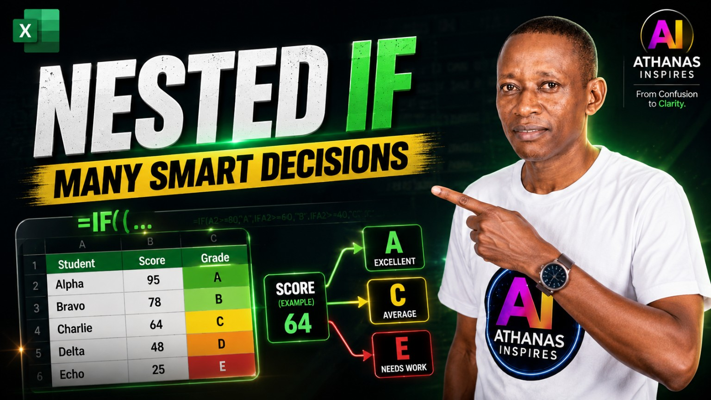

Move from two simple answers to smarter Excel decisions. Learn how Nested IF checks conditions step by step, then use that thinking to build Grade, Stock, Payment, and Student Grading systems.
BeginnerNested IFDecision SystemsPractice Included
Simple IF gives two answers. Nested IF gives many answers.

Lesson at a Glance
LevelBeginner
Main SkillNested IF
Core IdeaCheck conditions step by step
You Will Build4 decision systems
PracticeAssignment workbook included
Teaching StyleMeaning before mechanics
Before You Begin
You are not starting from zero.
Sessions 1–4 already gave you the foundation: cells, rows, columns, formulas, functions, ranges, the Fill Handle, larger tables, sorting, and Simple IF.
Use the video for the guided demonstration, and keep this written lesson open whenever you want to slow down, revisit a formula, or understand the logic more deeply.
If the average is 81 or more, give A. Otherwise, if it is 61 or more, give B. Otherwise, if it is 41 or more, give C. Otherwise, if it is 21 or more, give D. Otherwise, give E.
((((4 IF functions opened
))))4 IF functions closed
Why so many brackets? They are not random. Each closing bracket simply closes one IF function that was opened earlier.
One formula. One column. Drag down.
09
Logic Matters
Why checking order matters
Excel follows the order we give it. It stops at the first TRUE condition. That means a badly arranged Nested IF can return the wrong answer even when every individual condition looks reasonable.
Wrong order=IF(D7>=21,"D", ... )
If D7 is 90, the very first condition is already TRUE. Excel could return D and stop.
Better order=IF(D7>=81,"A", ... )
For this Grade System, checking the highest grade first keeps the categories correct.
Remember
Excel does exactly what we tell it to do, in the order we tell it to do it.
There is no single magic order for every Nested IF formula. The order must follow the logic of the problem.
A
System 1
Grade System
Excel checks a student's Average and returns A, B, C, D, or E.
Check for A first. If not A, check B. If not B, check C. If not C, check D. If none matches, return E.
Try It Yourself
If the Average is 75, what Grade should Excel return?
Answer: B
75 is not 81 or above, but it is 61 or above. Excel therefore returns Grade B.
□
System 2
Stock Level System
Different table. Different answers. Same Nested IF thinking.
0Out of Stock
< 50Low Stock
< 100Okay Stock
100+Full Stock
In this problem, checking zero first gives the clearest logic. If there is nothing available, Excel should immediately return Out of Stock.
Stock Status formula
=IF(D8=0,"Out of Stock",IF(D8<50,"Low Stock",IF(D8<100,"Okay Stock","Full Stock")))
Formula in Plain English
If quantity is 0, show Out of Stock. Otherwise, if it is below 50, show Low Stock. Otherwise, if it is below 100, show Okay Stock. Otherwise, show Full Stock.
If nothing has been paid, show Not Paid. Otherwise, if the Paid Amount is less than the Amount Required, show Partly Paid. Otherwise, show Fully Paid.
Try It Yourself
Required: 100,000 · Paid: 40,000. What should the status be?
Answer: Partly Paid
The person has paid something, but the Paid Amount is still less than the Amount Required.
◎
Final Project
Build a connected Student Grading System
Now the skills you learned separately begin working together inside one worksheet.
Subject Marks→Total→Average→Grade→Remark
Some columns contain information we type. Other columns contain answers Excel calculates or decides. This is the difference between a table that stores information and a system that responds to information.
Serial Number=ROW()-3
Quick refresher: creates the serial number from the worksheet row.
If Grade is A, return Outstanding. If B, return Very Good. If C, return Average. If D, return Weak. Otherwise, return Very Weak.
Test the system
Change the original subject marks and watch the connected columns respond. Total, Average, Grade, Position, and Remark can all update automatically because the formulas are linked.
14
Troubleshoot Calmly
Common Nested IF mistakes
A wrong result is information. It tells you there is something to check. Work through the formula calmly instead of starting again blindly.
01
Wrong checking order
Excel may stop at a condition that becomes TRUE too early.
02
Missing quotation marks
Text answers such as "A" or "Low Stock" need quotation marks.
03
Missing closing brackets
Every IF function you open must eventually be closed.
04
Wrong cell reference
Make sure Excel is checking the cell that actually contains the value you mean.
05
Wrong comparison sign
For example, > and >= do not mean the same thing at a boundary.
06
Copying before testing
Confirm the first formula works before using the Fill Handle.
Check → Find → Correct → Try Again.
15
Guided Practice
Try it yourself
Do not only read formulas. Predict what Excel should return. The goal is to train the thinking that sits behind the formula.
Grade
Average = 81. What Grade?
A
81 qualifies for the first condition: 81 or above.
Stock
Quantity = 99. What Status?
Okay Stock
99 is below 100, but not below 50.
Payment
Required = 100,000 · Paid = 120,000. What Status?
Fully Paid
The Paid Amount is not zero and is not below the Amount Required, so the final answer applies.
16
Before the Assignment
Session 5 recap
Simple IF gives two answers.
Nested IF gives many answers.
Nested IF means one IF function inside another IF function.
Excel checks one condition at a time.
Once Excel finds the first TRUE condition, it returns the answer and stops checking.
Checking order matters because Excel follows the logic we give it.
Write one correct formula, then use the Fill Handle to repeat the pattern.
The same decision pattern can work with grades, stock, payments, and connected systems.
Think clearly, and Excel becomes powerful.
17
Independent Practice
Complete the Session 5 assignment
Your assignment practises Nested IF in two systems: Grade System and Stock Status System. The workbook gives live feedback so you can correct mistakes and retry.
1. Download→2. Write the formulas→3. Check feedback→4. Correct & retry